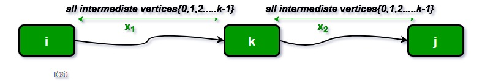

Floyd Warshall Algorithm
Problem Statement : The Floyd Warshall Algorithm is for solving the All Pairs Shortest Path problem. The problem is to find shortest distances between every pair of vertices in a given edge weighted directed Graph.
Floyds Algorithm
Input And Output
Input:
graph[][] = { {0, 5, INF, 10},
{INF, 0, 3, INF},
{INF, INF, 0, 1},
{INF, INF, INF, 0} }
which represents the following graph
10
(0)------->(3)
| /|\
5 | |
| | 1
\|/ |
(1)------->(2)
3
Note that the value of graph[i][j] is 0 if i is equal to j
And graph[i][j] is INF (infinite) if there is no edge from vertex i to j.
Output:
Shortest distance matrix
0 5 8 9
INF 0 3 4
INF INF 0 1
INF INF INF 0
We initialize the solution matrix same as the input graph matrix as a first step. Then we update the solution matrix by considering all vertices as an intermediate vertex.
The idea is to one by one pick all vertices and updates all shortest paths which include the picked vertex as an intermediate vertex in the shortest path.

When we pick vertex number k as an intermediate vertex, we already have considered vertices {0, 1, 2, .. k-1} as intermediate vertices. For every pair (i, j) of the source and destination vertices respectively, there are two possible cases.
1) k is not an intermediate vertex in shortest path from i to j. We keep the value of dist[i][j] as it is.
2) k is an intermediate vertex in shortest path from i to j. We update the value of dist[i][j] as dist[i][k] + dist[k][j] if dist[i][j] > dist[i][k] + dist[k][j]
The following figure shows the above optimal substructure property in the all-pairs shortest path problem
Algorithm
for(int k = 1; k <= n; k++){
for(int i = 1; i <= n; i++){
for(int j = 1; j <= n; j++){
dist[i][j] = min( dist[i][j], dist[i][k] + dist[k][j] );
}
}
}
Time Complexity of Floyd–Warshall's Algorithm is ,0(V3) where is the number of vertices in a graph